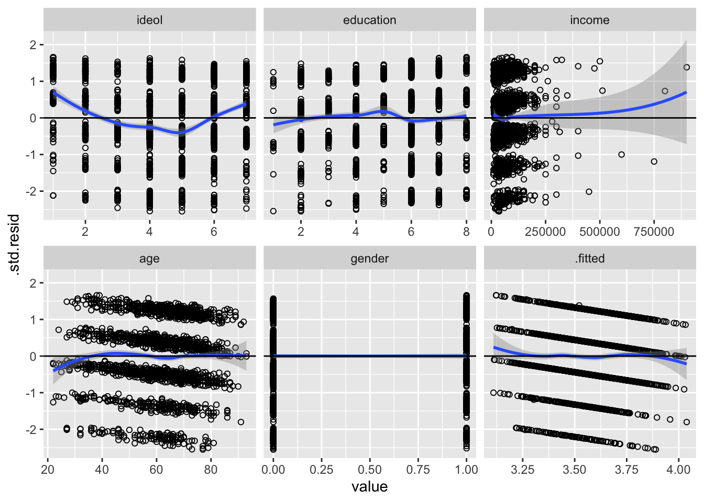
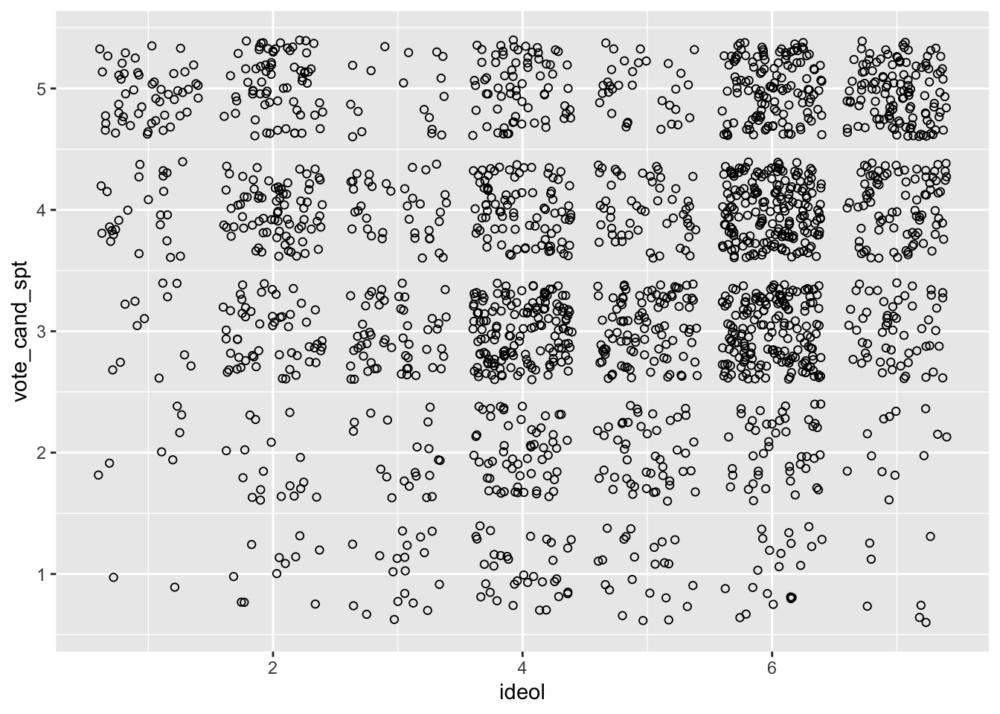
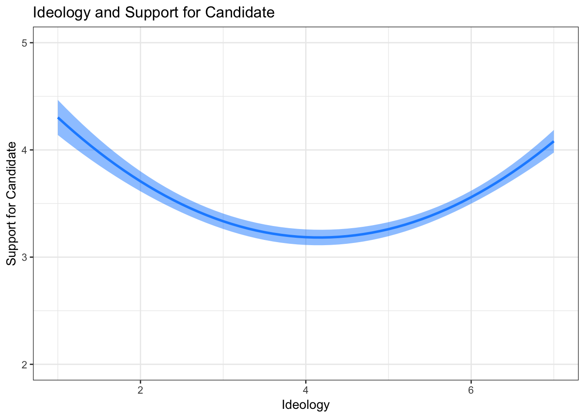
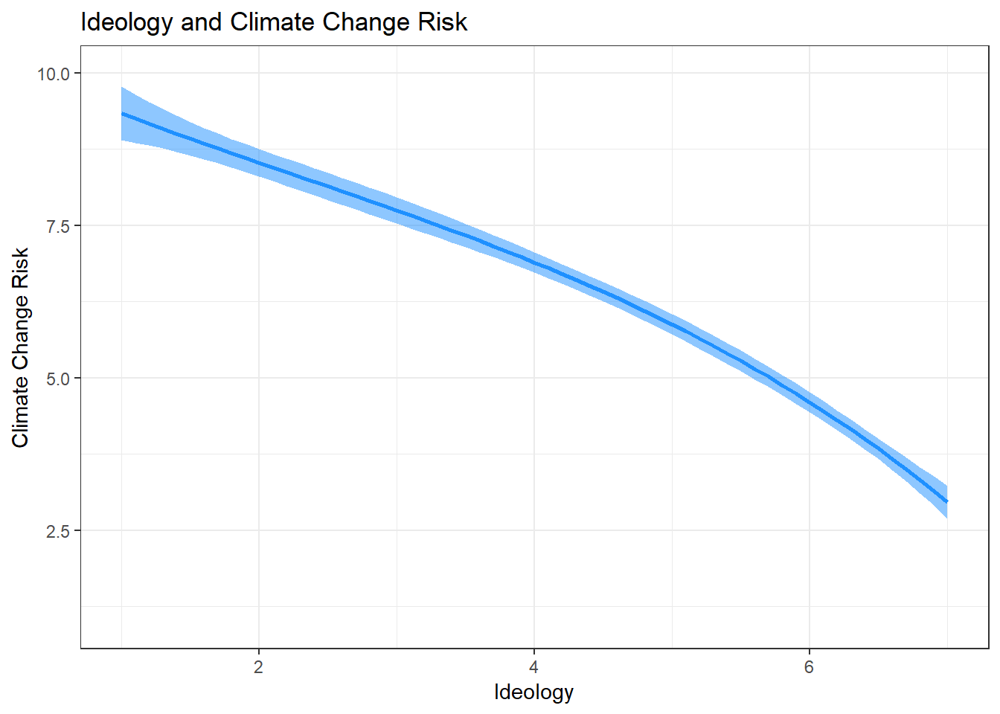
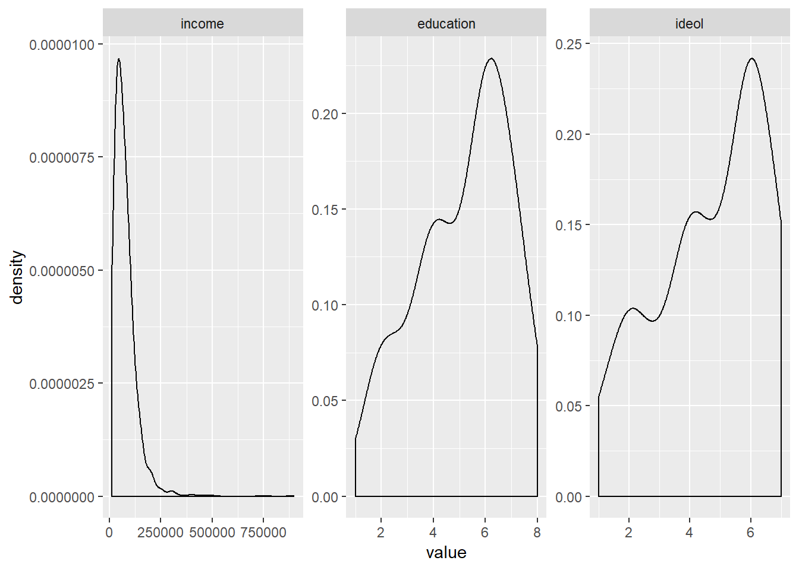
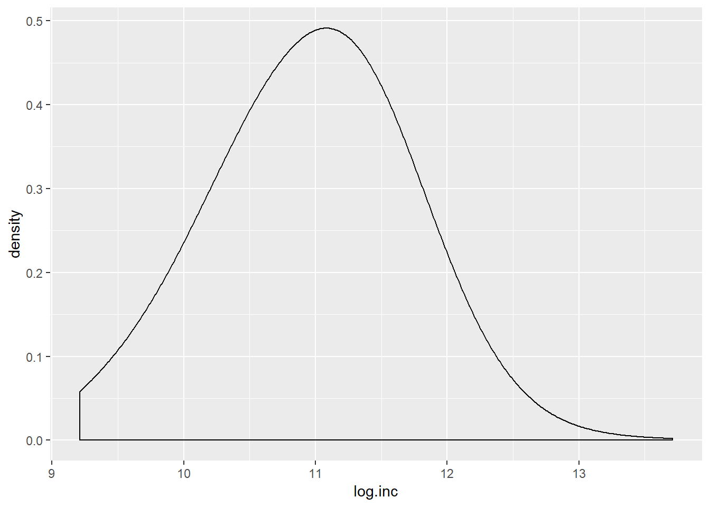
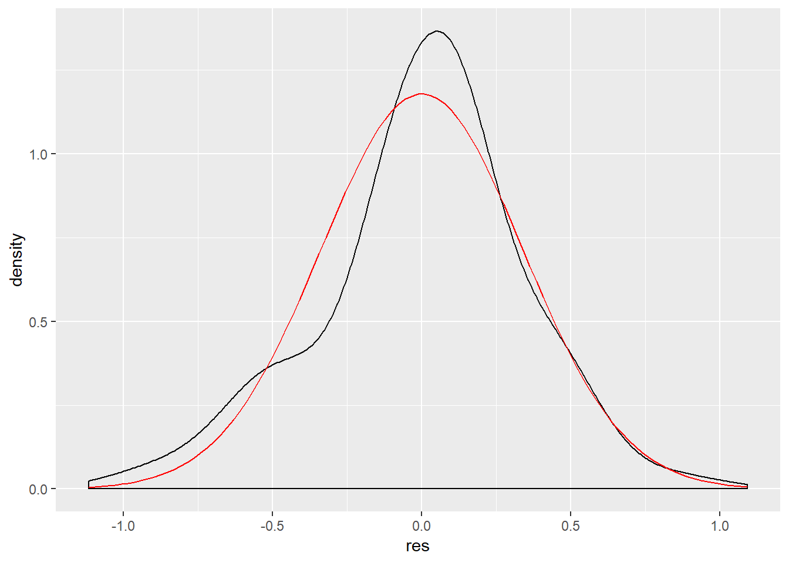
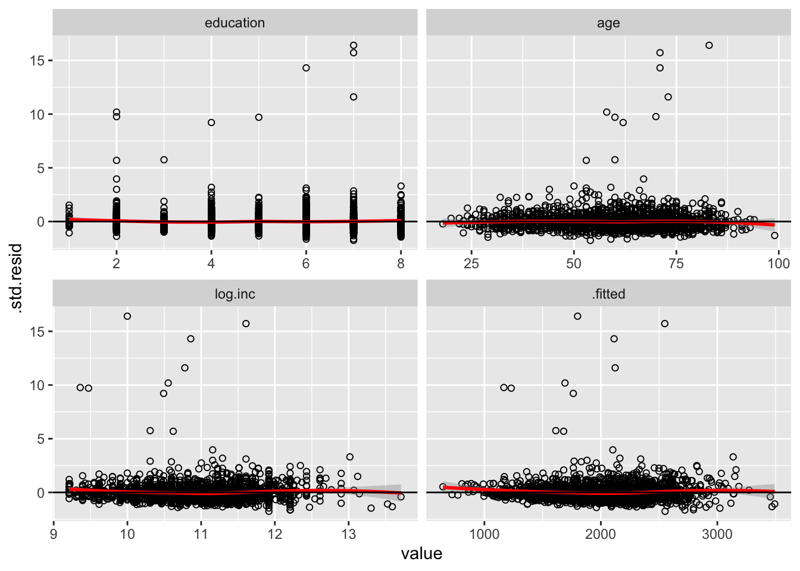
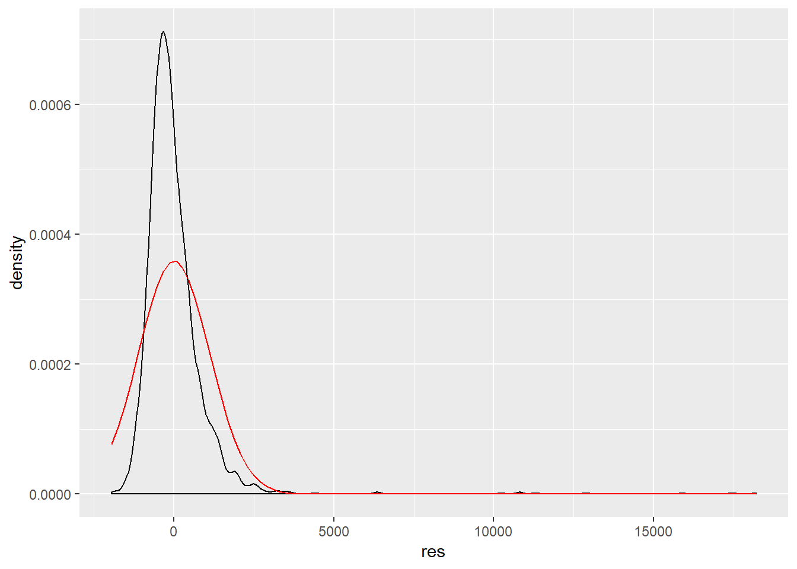

11 Non-linearity, Non-normality, and Multicollinearity
This lab focuses on issues that arise with non-linearity, non-normality, and multicollinearity. We begin with non-linearity. The following packages are required for this lab:
- tidyverse
- psych
- car
- stargazer
- reshape2
- skimr
- broom
11.1 Non-linearity
11.1.1 Exploring Non-linearity
A critical assumption of OLS is that the relationship between variables is linear in their functional form, therefore it is imperative to inspect whether a model consist of non-linear relationships between variables of interest. As the book describes, regression diagnostics is largely an art. To demonstrate, suppose you want to examine the relationship between ideology and candidate support in the 2016 presidential election. The survey associated with the class data set asked respondents to indicate on a scale of 1 to 5 the level of support they have for the candidate they voted for in the 2016 presidential election. We will start by exploring data in preparation for a linear regression model:
sub <- ds %>%
dplyr::select("vote_cand_spt", "ideol","education",
"income", "age", "gender", "f.gender",
"glbcc_cert", "f.party", "glbcc_risk",
"cncrn_econ") %>%
na.omit()Now examine the candidate support variable:
## vars n mean sd median trimmed mad min max range skew kurtosis
## X1 1 1980 3.56 1.15 4 3.65 1.48 1 5 4 -0.45 -0.52
## se
## X1 0.03Now a table:
##
## 1 2 3 4 5
## 117 209 600 560 494We can see that the modal value is 3, a response indicating moderate support for the candidate the respondent voted for. We also observe a negative skew indicating more responses in the higher values.
Next build the linear regression model:
##
## Call:
## lm(formula = vote_cand_spt ~ ideol + education + income + age +
## gender, data = sub)
##
## Residuals:
## Min 1Q Median 3Q Max
## -2.8895 -0.6401 0.2183 0.8652 1.8780
##
## Coefficients:
## Estimate Std. Error t value Pr(>|t|)
## (Intercept) 3.2245955848 0.1628686111 19.799 < 0.0000000000000002 ***
## ideol 0.0215255996 0.0148191732 1.453 0.14651
## education -0.0462020061 0.0153075522 -3.018 0.00257 **
## income -0.0000002871 0.0000004401 -0.652 0.51420
## age 0.0085719712 0.0018812530 4.557 0.00000552 ***
## gender -0.0601777317 0.0525893860 -1.144 0.25264
## ---
## Signif. codes: 0 '***' 0.001 '**' 0.01 '*' 0.05 '.' 0.1 ' ' 1
##
## Residual standard error: 1.134 on 1974 degrees of freedom
## Multiple R-squared: 0.02201, Adjusted R-squared: 0.01953
## F-statistic: 8.884 on 5 and 1974 DF, p-value: 0.00000002359Based on the p-values for the model variables, the ideology variable does not appear to help us understand what candidate the responded supported; however, we should examine the linearity of the variables. One way to do this is to plot the residuals by the values of the independent variables. Residual relationships should constitute a straight line with the residuals spread around a line at zero. To build this visualization we need to:
- Use
augment()to predict values and create a data frame containing fitted values and residuals - Melt the data into long form, sorted by independent variables.
- Visualize the relationship between the residuals and IVs simultaneously using
facet_wrap().
First the residuals and fitted values. Use head() to look at the first five observations in the data frame:
## # A tibble: 6 x 14
## .rownames vote_cand_spt ideol education income age gender .fitted
## <chr> <int> <int> <int> <dbl> <int> <int> <dbl>
## 1 1 5 6 4 160000 50 1 3.49
## 2 2 2 3 4 45000 58 1 3.53
## 3 3 4 6 6 40000 52 0 3.51
## 4 5 4 4 4 55000 40 0 3.45
## 5 7 3 2 6 40000 60 0 3.49
## 6 8 4 4 6 50000 67 1 3.53
## # … with 6 more variables: .se.fit <dbl>, .resid <dbl>, .hat <dbl>,
## # .sigma <dbl>, .cooksd <dbl>, .std.resid <dbl>Now we need to melt the data into rows with unique id-variable combinations.
m.df %>%
melt(measure.vars = c("ideol", "education", "income", "age",
"gender", ".fitted")) -> m.df
head(m.df)## .rownames vote_cand_spt .se.fit .resid .hat .sigma
## 1 1 5 0.06292522 1.5085812 0.003078242 1.133935
## 2 2 2 0.05491383 -1.5284394 0.002344319 1.133922
## 3 3 4 0.04930230 0.4892061 0.001889677 1.134391
## 4 5 4 0.05455346 0.5470242 0.002313651 1.134378
## 5 7 3 0.05215890 -0.4932672 0.002114999 1.134390
## 6 8 4 0.04636595 0.4667270 0.001671289 1.134396
## .cooksd .std.resid variable value
## 1 0.00091331373 1.3321858 ideol 6
## 2 0.00071294152 -1.3492255 ideol 3
## 3 0.00005881882 0.4317469 ideol 6
## 4 0.00009012074 0.4828766 ideol 4
## 5 0.00006696004 -0.4353802 ideol 2
## 6 0.00004732953 0.4118630 ideol 4The next step is to plot the residuals by the values of the independent variables. We’re going to use geom_smooth() to create a loess line that approximates the spread of our data, and we will use geom_hline() to plot a horizontal line at 0. Then we will use facet_wrap() to tell R to create different plots for each independent variable of the model:
ggplot(m.df, aes(value, .std.resid)) +
geom_point(shape = 1) +
geom_smooth(aes(value, .std.resid), method = "loess") +
geom_hline(yintercept = 0) +
facet_wrap(~variable, scales = "free_x")
We can see there are some potential non-linear relationships; for instance, the ideology variable. The next step is to consider adding an exponent the ideology variable. Note: We want to avoid over fitting our model to the data. Therefore it is important to have an understanding of why you are including an exponent.
For example, when thinking about how ideology might influence candidate support, you could imagine this might be an instance when a quadratic model would be appropriate. Think about it: it wouldn’t make sense to theorize that the more conservative an individual, the more enthusiastic they were for the candidate they voted for (regardless of who the candidate was), but it does make sense to theorize that the more ideologically extreme an individual is (very liberal or very conservative) the more they supported the candidate they voted for. Perhaps the moderates voting in the 2016 election felt left our or alienated by the polarized political environment, and therefore might have had less support for the candidate they voted for.
With this in mind, let’s build a new model to include ideology as a squared term. Note: The syntax to use a polynomial is: poly(var,# of powers). The poly function creates an independent variable for each of the powers as required to create orthogonal power terms. Let’s construct the model:
pol <- lm(vote_cand_spt ~ poly(ideol,2) + education + income + age + gender, data = sub)
summary(pol)##
## Call:
## lm(formula = vote_cand_spt ~ poly(ideol, 2) + education + income +
## age + gender, data = sub)
##
## Residuals:
## Min 1Q Median 3Q Max
## -3.2697 -0.6101 0.0023 0.7914 2.2046
##
## Coefficients:
## Estimate Std. Error t value Pr(>|t|)
## (Intercept) 3.4716343110 0.1404083490 24.725 < 0.0000000000000002
## poly(ideol, 2)1 1.6130128925 1.1096206250 1.454 0.146
## poly(ideol, 2)2 14.8590944999 1.0888870633 13.646 < 0.0000000000000002
## education -0.0586338098 0.0146646212 -3.998 0.0000661
## income -0.0000001029 0.0000004210 -0.245 0.807
## age 0.0071042635 0.0018019703 3.942 0.0000835
## gender -0.0760264761 0.0502966844 -1.512 0.131
##
## (Intercept) ***
## poly(ideol, 2)1
## poly(ideol, 2)2 ***
## education ***
## income
## age ***
## gender
## ---
## Signif. codes: 0 '***' 0.001 '**' 0.01 '*' 0.05 '.' 0.1 ' ' 1
##
## Residual standard error: 1.084 on 1973 degrees of freedom
## Multiple R-squared: 0.1064, Adjusted R-squared: 0.1036
## F-statistic: 39.13 on 6 and 1973 DF, p-value: < 0.00000000000000022We see that our squared ideology term is statistically significant, but the coefficient may not provide us an intuitive interpretation. Before visualizing the model, it may be helpful to compare the new model to the previous, via the anova() function, to compare their fit to the data:
## Analysis of Variance Table
##
## Model 1: vote_cand_spt ~ ideol + education + income + age + gender
## Model 2: vote_cand_spt ~ poly(ideol, 2) + education + income + age + gender
## Res.Df RSS Df Sum of Sq F Pr(>F)
## 1 1974 2539.2
## 2 1973 2320.2 1 218.99 186.22 < 0.00000000000000022 ***
## ---
## Signif. codes: 0 '***' 0.001 '**' 0.01 '*' 0.05 '.' 0.1 ' ' 1The significant p-value for the second line implies the second model is a better fit. We can also compare the adjusted \(R^2\) values:
##
## ====================================================================
## Dependent variable:
## ------------------------------------------------
## vote_cand_spt
## (1) (2)
## --------------------------------------------------------------------
## ideol 0.022 (0.015)
## poly(ideol, 2)1 1.613 (1.110)
## poly(ideol, 2)2 14.859*** (1.089)
## education -0.046*** (0.015) -0.059*** (0.015)
## income -0.00000 (0.00000) -0.00000 (0.00000)
## age 0.009*** (0.002) 0.007*** (0.002)
## gender -0.060 (0.053) -0.076 (0.050)
## Constant 3.225*** (0.163) 3.472*** (0.140)
## --------------------------------------------------------------------
## Observations 1,980 1,980
## R2 0.022 0.106
## Adjusted R2 0.020 0.104
## Residual Std. Error 1.134 (df = 1974) 1.084 (df = 1973)
## F Statistic 8.884*** (df = 5; 1974) 39.134*** (df = 6; 1973)
## ====================================================================
## Note: *p<0.1; **p<0.05; ***p<0.01The coefficients for the individual variables in the quadratic model are statistically significant, suggesting they help us understand our dependent variable. Let’s move onto the visualization. Since ideology is our variable of interest, we will visualize the relationship between ideology and candidate support while holding the other variables constant at their means.
Start by looking at a scatter plot. To assist we need to jitter the data because ideology is a discrete variable:

Now add the regression line and confidence interval. To do this we will:
- Create predicted values and standard error values of candidate support using the
augment()function, while holding all other values constant at their mean. - Generate upper and lower limits of the confidence interval using
mutate() - Visualize.
First: predict. We are going to sequence ideology from 1 to 7 by 0.1 instead of by 1 to produce a smoother line:
pol %>%
augment(newdata = data.frame(ideol = seq(1,7,.1),
education = mean(sub$education),
income = mean(sub$income),
age = mean(sub$age),
gender= mean(sub$gender))) -> pol.dfNow create the upper and lower limits of the confidence interval:
The next step is to visualize. Use geom_line() to create the line, and geom_ribbon() to create the confidence interval. For practice, let’s label the axes and add a title.
ggplot(pol.df, aes(ideol, .fitted)) +
geom_line(size = 1, color = "dodgerblue") +
geom_ribbon(aes(ymin = lower, ymax = upper), fill = "dodgerblue", alpha = .5) +
coord_cartesian(ylim = c(2:5), xlim = c(1:7)) +
xlab("Ideology") +
ylab("Support for Candidate") +
ggtitle("Ideology and Support for Candidate") +
theme_bw()
This visualization shows the relationship specified in our theory: that the relationship between ideology and candidate support is quadratic, where more ideologically extreme individuals have more support for the candidate they voted for than moderates.
Let’s use an example where a cubed exponent would be appropriate. A very common model we’ve used has been exploring the relationship between ideology and climate change risk. Perhaps the relationship between the two is not best described linearly. Let’s first make a model we’ve looked at many times before:
##
## Call:
## lm(formula = glbcc_risk ~ age + gender + ideol + education, data = sub)
##
## Residuals:
## Min 1Q Median 3Q Max
## -9.0014 -1.6496 0.1836 1.4960 6.8115
##
## Coefficients:
## Estimate Std. Error t value Pr(>|t|)
## (Intercept) 10.788953 0.348172 30.987 <0.0000000000000002 ***
## age -0.001105 0.004013 -0.275 0.7832
## gender -0.264746 0.111988 -2.364 0.0182 *
## ideol -1.062645 0.031745 -33.474 <0.0000000000000002 ***
## education 0.052300 0.031618 1.654 0.0983 .
## ---
## Signif. codes: 0 '***' 0.001 '**' 0.01 '*' 0.05 '.' 0.1 ' ' 1
##
## Residual standard error: 2.436 on 1975 degrees of freedom
## Multiple R-squared: 0.3796, Adjusted R-squared: 0.3784
## F-statistic: 302.1 on 4 and 1975 DF, p-value: < 0.00000000000000022Now plot the residuals by the independent variables:
lm1 %>%
augment() %>%
melt(measure.vars = c("ideol", "education", "age",
"gender", ".fitted")) %>%
ggplot(., aes(value, .std.resid)) +
geom_point(shape = 1) +
geom_smooth(aes(value, .std.resid), method = "loess") +
geom_hline(yintercept = 0) +
facet_wrap(~variable, scales = "free_x")
Looking at the ideology variable, we can see that it is likely not linear. It looks more like the loess line moves above and below the line at zero. This may imply that a cube term might be appropriate. Build a model that cubes ideology:
cubed <- lm(formula = glbcc_risk ~ age + gender + poly(ideol, 3) + education, data = sub)
summary(cubed)##
## Call:
## lm(formula = glbcc_risk ~ age + gender + poly(ideol, 3) + education,
## data = sub)
##
## Residuals:
## Min 1Q Median 3Q Max
## -8.8042 -1.7562 0.2032 1.5035 7.3212
##
## Coefficients:
## Estimate Std. Error t value Pr(>|t|)
## (Intercept) 5.71039034 0.31056558 18.387 < 0.0000000000000002 ***
## age -0.00006485 0.00399923 -0.016 0.9871
## gender -0.25936550 0.11136612 -2.329 0.0200 *
## poly(ideol, 3)1 -83.16325764 2.47050241 -33.662 < 0.0000000000000002 ***
## poly(ideol, 3)2 -12.07796545 2.42949486 -4.971 0.000000722 ***
## poly(ideol, 3)3 -3.53484785 2.42400684 -1.458 0.1449
## education 0.06113881 0.03146973 1.943 0.0522 .
## ---
## Signif. codes: 0 '***' 0.001 '**' 0.01 '*' 0.05 '.' 0.1 ' ' 1
##
## Residual standard error: 2.421 on 1973 degrees of freedom
## Multiple R-squared: 0.3879, Adjusted R-squared: 0.3861
## F-statistic: 208.4 on 6 and 1973 DF, p-value: < 0.00000000000000022Now compare the two models:
##
## =======================================================================
## Dependent variable:
## ---------------------------------------------------
## glbcc_risk
## (1) (2)
## -----------------------------------------------------------------------
## age -0.001 (0.004) -0.0001 (0.004)
## gender -0.265** (0.112) -0.259** (0.111)
## ideol -1.063*** (0.032)
## poly(ideol, 3)1 -83.163*** (2.471)
## poly(ideol, 3)2 -12.078*** (2.429)
## poly(ideol, 3)3 -3.535 (2.424)
## education 0.052* (0.032) 0.061* (0.031)
## Constant 10.789*** (0.348) 5.710*** (0.311)
## -----------------------------------------------------------------------
## Observations 1,980 1,980
## R2 0.380 0.388
## Adjusted R2 0.378 0.386
## Residual Std. Error 2.436 (df = 1975) 2.421 (df = 1973)
## F Statistic 302.117*** (df = 4; 1975) 208.430*** (df = 6; 1973)
## =======================================================================
## Note: *p<0.1; **p<0.05; ***p<0.01It actually looks like the cube term does not describe the data very well. The adjusted R squared appears to marginally increase in the cubed model, but that does not tell us much. Let’s use ANOVA:
## Analysis of Variance Table
##
## Model 1: glbcc_risk ~ age + gender + ideol + education
## Model 2: glbcc_risk ~ age + gender + poly(ideol, 3) + education
## Res.Df RSS Df Sum of Sq F Pr(>F)
## 1 1975 11720
## 2 1973 11562 2 157.55 13.443 0.00000159 ***
## ---
## Signif. codes: 0 '***' 0.001 '**' 0.01 '*' 0.05 '.' 0.1 ' ' 1The ANOVA test tells us that our cubed model is a better fit. This is likely due to the square term, which is statistically significant. Nonetheless, let’s visualize this so you have experience seeing cubed lines.
Follow the same steps as last time, predicting values, calculating the confidence interval, and plotting using geom_line() and geom_ribbon().
cubed %>%
augment(newdata = data.frame(ideol = seq(1,7,.1),
education = mean(sub$education),
age = mean(sub$age),
gender= mean(sub$gender))) %>%
mutate(upper = .fitted + 1.96 * .se.fit,
lower = .fitted - 1.96 * .se.fit) -> cube.df
ggplot(cube.df, aes(ideol, .fitted)) +
geom_line(size = 1, color = "dodgerblue") +
geom_ribbon(aes(ymin = lower, ymax = upper), fill = "dodgerblue", alpha = .5) +
coord_cartesian(ylim = c(1:10), xlim = c(1:7)) +
xlab("Ideology") +
ylab("Climate Change Risk") +
ggtitle("Ideology and Climate Change Risk") +
theme_bw()
11.2 Non-normality
This section will go over the problem of non-normality and how to deal with it. One of the key assumptions of OLS is that the residuals of the model are normally distributed. It is also important to make sure your variables are not skewed too far either negatively or positively. Let’s cover how to examine whether residuals are normally distributed, as well as how to handle greatly-skewed variables.
To begin, suppose you want to examine how different independent variables are related to a vote for Donald Trump in the 2016 presidential election. We need to clean up the class data set variable on 2016 presidential votes. Let’s look at it:
##
## 0 1 2 3 4
## 1272 722 125 7 39The codebook for the class data set tells us that a response of 0 indicates a vote for Trump, 1 is for Clinton, 2 for Gary Johnson, 3 for Jill Stein, and 4 for a different candidate. Change the variable so that it only includes Trump and Clinton. To transform this variable into a binary indicator of a vote for Trump or Clinton, we need to recode the variable so that responses of 1 equals 0, a response of 0 equals 1, with all else an NA:
##
## 0 1
## 722 1272Now pull the variables into a new data set and remove missing observations:
Now review independent variables that are not binary:
## vars n mean sd median trimmed mad min max range
## X1 1 1819 72889.47 58269.83 60000 64601.34 41512.8 10000 900000 890000
## skew kurtosis se
## X1 4.13 37.96 1366.24## vars n mean sd median trimmed mad min max range skew kurtosis
## X1 1 1819 5.18 1.78 6 5.28 1.48 1 8 7 -0.45 -0.79
## se
## X1 0.04## vars n mean sd median trimmed mad min max range skew kurtosis se
## X1 1 1819 4.69 1.8 5 4.81 1.48 1 7 6 -0.5 -0.89 0.04Look at the density distributions:
new.ds %>%
melt(measure.vars = c("income", "education", "ideol")) %>%
ggplot(., aes(value)) +
geom_density(adjust = 2) +
facet_wrap(~ variable, scales = "free")
It is clear that the income variable has a large positive skew. Education and ideology are slightly skewed. One way to fix a skewed variable is to transform it, often by a log. Let’s try that:
Now review it:
## vars n mean sd median trimmed mad min max range skew kurtosis
## X1 1 1819 10.96 0.7 11 10.97 0.74 9.21 13.71 4.5 -0.12 -0.03
## se
## X1 0.02
The skew appears to be reduced. Transforming a variable does not really change how you use it in a model, but it does change the interpretation. Now the variable is ordered in logs. So a mean of 10.96 indicates 10.96 natural logged income. Now let’s build the model, using the log of income instead of the income variable:
##
## Call:
## lm(formula = v.trump ~ log.inc + education + gender + ideol,
## data = new.ds)
##
## Residuals:
## Min 1Q Median 3Q Max
## -1.11760 -0.12826 0.05173 0.16066 1.09163
##
## Coefficients:
## Estimate Std. Error t value Pr(>|t|)
## (Intercept) -0.273694 0.129610 -2.112 0.0349 *
## log.inc 0.015387 0.012458 1.235 0.2169
## education -0.024763 0.004906 -5.048 0.000000492 ***
## gender 0.015522 0.016451 0.944 0.3455
## ideol 0.184062 0.004517 40.748 < 0.0000000000000002 ***
## ---
## Signif. codes: 0 '***' 0.001 '**' 0.01 '*' 0.05 '.' 0.1 ' ' 1
##
## Residual standard error: 0.3389 on 1814 degrees of freedom
## Multiple R-squared: 0.5044, Adjusted R-squared: 0.5033
## F-statistic: 461.6 on 4 and 1814 DF, p-value: < 0.00000000000000022Regarding the ideology variable, there really should not be any surprises. More conservative individuals voted for Trump. Education is significant, but the coefficient is rather small. Our model suggests that education helps us explain voting, with more education tending to go with voting for Clinton. Our log.income variable does not help us to explain voting.
Let’s now look at the normality of the residuals. First assign the residuals to our data set:
Now make a density plot of the residuals, but also include a normal curve that has the mean and standard deviation of the residuals:
ggplot(new.ds, aes(res))+
geom_density(adjust = 3) +
stat_function(fun = dnorm, args = list(mean = mean(new.ds$res), sd = sd(new.ds$res)),
color = "red")
The eye test indicates that we might have an issue with non-normality of the residuals. Let’s run the Shapiro-Wilk test as well:
##
## Shapiro-Wilk normality test
##
## data: lm.trump$residuals
## W = 0.97524, p-value < 0.00000000000000022Recall that the Shapiro-Wilk test tests against the null hypothesis that data are normally distributed. Our test result indicates that the residuals might not be normal, which is corroborated by the visualization. In a future lab we will go over one way to correct this, robust estimators.
11.3 Multicollinearity
Multicollinearity occurs when one independent variable of a model can be predicted with a high degree of accuracy by another independent variable. Even though perfect multicollinearity is very rare, checking for multicollinearity is an important process. The first way to explore potential multicollinearity is to check the collinearity between independent variables:
## ideol log.inc education
## ideol 1.000000000 0.009092405 -0.1700741
## log.inc 0.009092405 1.000000000 0.3732611
## education -0.170074114 0.373261119 1.0000000There does not appear to be any extremely highly-correlated variables. We should find the variance inflation factor, which measures the increase in variance of the other coefficients due to the inclusion of a particular variable:
## log.inc education gender ideol
## 1.193055 1.206849 1.039107 1.043909Generally speaking, you do not want to have a value greater than 5. This model does not appear to have an issue with multicollinearity.
Now let’s use an example that combines everything we’ve gone over so far. Let’s examine the relationship between square footage of the respondent’s home and income, age, and education. Start by selecting the data and removing missing observations:
Like earlier, we should do a log-transformation of income:
Now build the model:
##
## Call:
## lm(formula = footage ~ age + education + log.inc, data = d)
##
## Residuals:
## Min 1Q Median 3Q Max
## -1951.5 -526.0 -176.6 296.6 18199.8
##
## Coefficients:
## Estimate Std. Error t value Pr(>|t|)
## (Intercept) -4598.212 403.704 -11.390 < 0.0000000000000002 ***
## age 9.633 1.695 5.683 0.000000015 ***
## education 32.968 14.126 2.334 0.0197 *
## log.inc 536.881 36.366 14.763 < 0.0000000000000002 ***
## ---
## Signif. codes: 0 '***' 0.001 '**' 0.01 '*' 0.05 '.' 0.1 ' ' 1
##
## Residual standard error: 1111 on 2232 degrees of freedom
## Multiple R-squared: 0.1186, Adjusted R-squared: 0.1174
## F-statistic: 100.1 on 3 and 2232 DF, p-value: < 0.00000000000000022Check for multicollinearity:
## age education log.inc
## age 1.00000000 -0.04921609 -0.1327773
## education -0.04921609 1.00000000 0.3720851
## log.inc -0.13277728 0.37208510 1.0000000## age education log.inc
## 1.017946 1.160695 1.178663Taking all this into account, there does not appear to be a problem with multicollinearity.
Now let’s examine the linearity of the variables. Recall the plot we made earlier that plots the independent variables by the residuals. Let’s do that again:
mod %>%
augment() %>%
melt(measure.vars = c("education", "age", "log.inc", ".fitted")) %>%
ggplot(., aes(value, .std.resid)) +
geom_point(shape = 1) +
geom_smooth(method = loess, color = "red") +
geom_hline(yintercept = 0) +
facet_wrap(~variable, scales = "free_x")
There does not appear to be an issue with non-linearity either, so we have no reason to include exponents in the model.
The next step is to check for non-normality of the residuals:
d$res <- residuals(mod)
ggplot(d, aes(res))+
geom_density() +
stat_function(fun = dnorm, args = list(mean = mean(d$res), sd = sd(d$res)),
color = "red")
##
## Shapiro-Wilk normality test
##
## data: mod$residuals
## W = 0.56711, p-value < 0.00000000000000022Our results and visualization indicate that there could be a problem with non-normality.
Let’s take a look at the results of the model again:
##
## Call:
## lm(formula = footage ~ age + education + log.inc, data = d)
##
## Residuals:
## Min 1Q Median 3Q Max
## -1951.5 -526.0 -176.6 296.6 18199.8
##
## Coefficients:
## Estimate Std. Error t value Pr(>|t|)
## (Intercept) -4598.212 403.704 -11.390 < 0.0000000000000002 ***
## age 9.633 1.695 5.683 0.000000015 ***
## education 32.968 14.126 2.334 0.0197 *
## log.inc 536.881 36.366 14.763 < 0.0000000000000002 ***
## ---
## Signif. codes: 0 '***' 0.001 '**' 0.01 '*' 0.05 '.' 0.1 ' ' 1
##
## Residual standard error: 1111 on 2232 degrees of freedom
## Multiple R-squared: 0.1186, Adjusted R-squared: 0.1174
## F-statistic: 100.1 on 3 and 2232 DF, p-value: < 0.00000000000000022To interpret this model, we would say that a one unit increase in age corresponds with a 9.633 unit increase in square footage of home. Looking at education, we would say that a one unit increase in log income corresponds with a 536.9 unit increase in home square footage. Practically speaking though, how large is the difference between the age increase and the log income increase? We can see it is almost a 530 square foot difference, but when thinking about the overall distribution of the square footage variable, is that a lot?
11.4 Standardizing Coefficients
If you want to compare coefficients of different scales, you need to standardize them. There are three options when standardizing:
- Standardize the dependent variable.
- Standardize the independent variables.
- Standardize all the variables.
Standardizing a variable refers to scaling it in standard deviations. This allows us to compare variables that were originally measured in different units. Let’s use our previously developed model, but this time we will standardize the dependent variable only. Use the scale() function on the footage variable to standardize it:
Now build the model and look at the results:
##
## Call:
## lm(formula = z.footage ~ age + education + log.inc, data = d)
##
## Residuals:
## Min 1Q Median 3Q Max
## -1.6500 -0.4447 -0.1493 0.2508 15.3881
##
## Coefficients:
## Estimate Std. Error t value Pr(>|t|)
## (Intercept) -5.595500 0.341336 -16.393 < 0.0000000000000002 ***
## age 0.008145 0.001433 5.683 0.000000015 ***
## education 0.027875 0.011944 2.334 0.0197 *
## log.inc 0.453940 0.030748 14.763 < 0.0000000000000002 ***
## ---
## Signif. codes: 0 '***' 0.001 '**' 0.01 '*' 0.05 '.' 0.1 ' ' 1
##
## Residual standard error: 0.9395 on 2232 degrees of freedom
## Multiple R-squared: 0.1186, Adjusted R-squared: 0.1174
## F-statistic: 100.1 on 3 and 2232 DF, p-value: < 0.00000000000000022Since we only standardized the dependent variable, we would interpret this as saying that a one unit increase in age corresponds with a .008 standard deviation increase in square footage. For log income, we would say that a one unit increase in log income corresponds with a .45 standard deviation increase in square footage.
Now let’s standardize the independent variables only:
Next build the model:
##
## Call:
## lm(formula = footage ~ z.age + z.log.income + z.education, data = d)
##
## Residuals:
## Min 1Q Median 3Q Max
## -1951.5 -526.0 -176.6 296.6 18199.8
##
## Coefficients:
## Estimate Std. Error t value Pr(>|t|)
## (Intercept) 2019.67 23.50 85.951 < 0.0000000000000002 ***
## z.age 134.76 23.71 5.683 0.000000015 ***
## z.log.income 376.71 25.52 14.763 < 0.0000000000000002 ***
## z.education 59.10 25.32 2.334 0.0197 *
## ---
## Signif. codes: 0 '***' 0.001 '**' 0.01 '*' 0.05 '.' 0.1 ' ' 1
##
## Residual standard error: 1111 on 2232 degrees of freedom
## Multiple R-squared: 0.1186, Adjusted R-squared: 0.1174
## F-statistic: 100.1 on 3 and 2232 DF, p-value: < 0.00000000000000022Now we would say that a one standard deviation increase in age corresponds with a 134.8 unit increase in square footage, and a one standard deviation increase in log income corresponds with a 376.71 unit increase in square footage. Comparing the coefficients here is rather simple and intuitive. Of course, we next need to standardize all the variables and interpret those.
##
## Call:
## lm(formula = z.footage ~ z.log.income + z.education + z.age,
## data = d)
##
## Residuals:
## Min 1Q Median 3Q Max
## -1.6500 -0.4447 -0.1493 0.2508 15.3881
##
## Coefficients:
## Estimate Std. Error t value
## (Intercept) 0.0000000000000004024 0.0198677514270765854 0.000
## z.log.income 0.3185111526573831675 0.0215744999251085111 14.763
## z.education 0.0499665777182138754 0.0214094220526226224 2.334
## z.age 0.1139389459055853149 0.0200497182548632288 5.683
## Pr(>|t|)
## (Intercept) 1.0000
## z.log.income < 0.0000000000000002 ***
## z.education 0.0197 *
## z.age 0.000000015 ***
## ---
## Signif. codes: 0 '***' 0.001 '**' 0.01 '*' 0.05 '.' 0.1 ' ' 1
##
## Residual standard error: 0.9395 on 2232 degrees of freedom
## Multiple R-squared: 0.1186, Adjusted R-squared: 0.1174
## F-statistic: 100.1 on 3 and 2232 DF, p-value: < 0.00000000000000022Being careful to interpret this correctly, we would say that a one standard deviation change in log income corresponds with a .32 standard deviation increase in square footage.